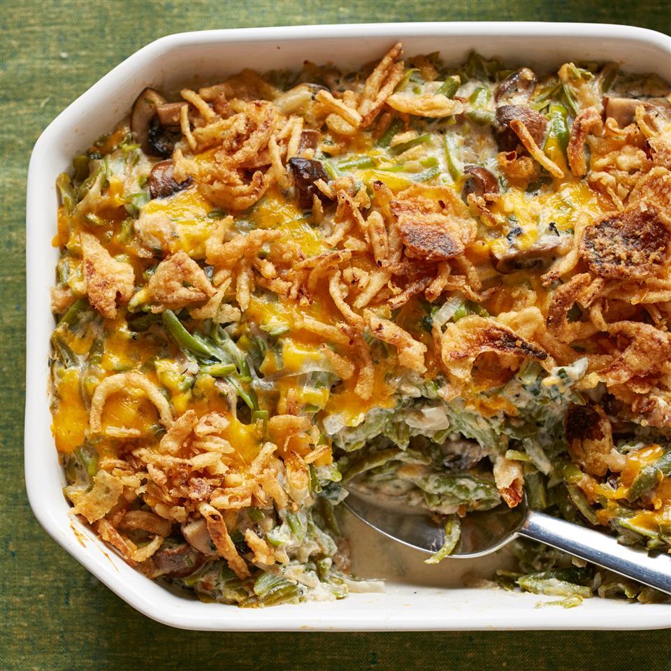

Green Bean Casserole

Description
A Thanksgiving favorite made from fresh ingredients instead of cans.
Ingredients
- Fresh green beans
- Cremini mushrooms
- Butter
- White Onion
- Fresh parsley
- Flour
- Milk
- Sour cream
- French fried onions
Steps
- Set oven to 350 degrees.
- Cook green beans in boling water for 5 min. Drain and set aside.
- Melt butter in hot pan and add in cut onion and parsley. Cook about 5 min. Add flour and salt and pepper with onions. Whisk in milk, then add sour cream.
- Warm over medium heat until sauce thickens and bubbles. Add in cooked green beans and mushrooms, until coated with sauce.
- Remove from heat and add in cheese and some of the french fried onions. Leave some fried oonions for topping.
- Add mixture to casserole dish and top with cheese and rest of the fried onions.
- Bake 15-20 min, remove once cheese melted.
Adapted from All Recipes